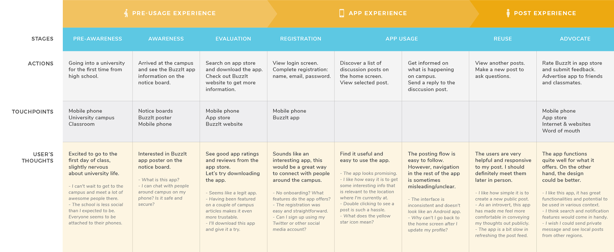
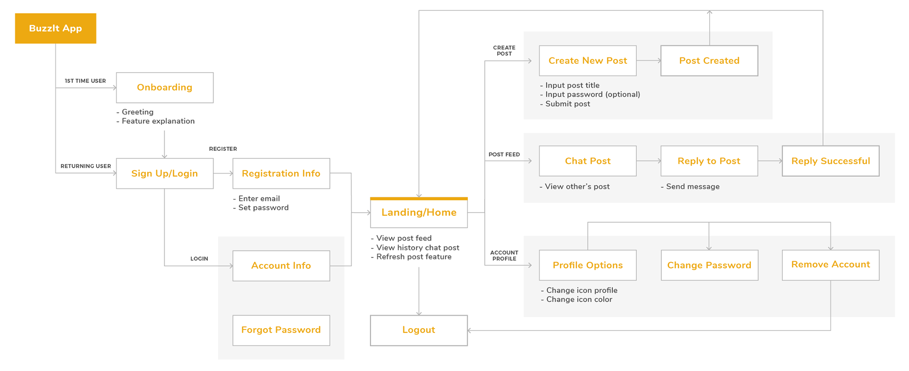
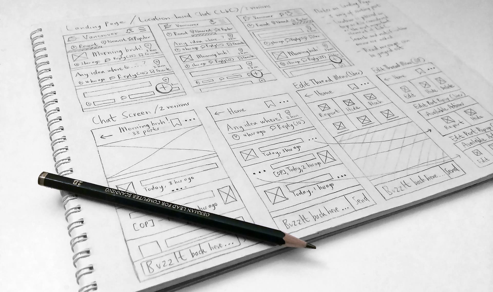
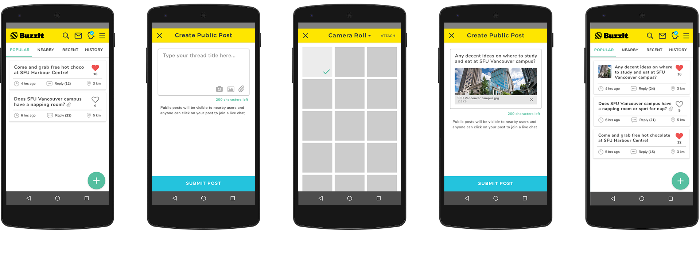

Timeline
4 months
BuzzIt Inc. is a startup software company that is building an open, location-based chat app that allows users to connect and share their thoughts with people around them without sharing contact information.
As the company's first and sole UX/UI designer, I was in charge of redesigning and creating the entire Android app interface and experience. I helped define a new vision and direction for the brand and produced high quality deliverables and mockups to highlight the product.
First of all, we conducted a number of usability testing with our users (university students) to discover the usability problems within the app. We also compiled the previous results of the heuristic evaluation the team and I had conducted. Below is the summary of our findings:
We created a user journey framework to highlight all the various touchpoints of a typical user. This allowed us to find the opportunities and openings to intervene as well as identifying the common pain points users encountered.
We looked at the existing app interface and created a user flow diagram to see how a user would navigate through the app. We also took some screenshots of the entire interface and compiled them into a single diagram. This was an important document which allowed us to discuss previous design decisions and identify navigational issues with the team.
At the beginning of the project, we sketched out various designs, testing out different layouts and information hierarchy. We did quick, low fidelity sketches and shared them with the rest of the team to discuss and iterate. This proved to be very helpful as we could point out potential technological problems and usability concerns.
The posting flow is the central experience of the app where users can create a new type of post (public or private), customize the post title, attach a photo, and submit to make a post. I redesigned the interface to be consistent with BuzzIt brand identity and Google material design guidelines.
To organize information in an easily digestible way, we decided to use cards and lists design. Card allows flexibility for different types of information and can be quickly implemented to other elements on the app. The tab filters are implemented to enable users to sort posts based on their preferences.
The post title maintained the same layout as it is on the home page to provide context and allow users to quickly identify the post they are in.
The status bar is positioned fixed at the top for easy access to edit the post, while the comment bar is hidden when users scroll down to provide more content to be displayed on the screen.
We merged the two types of post (public and private) into an expandable floating action button. Now, users can easily create any type of post directly from the home page and attach a photo to their post.
To address the lack of context issue in error handling, the interface highlights where the error is and provides the solution to resolve it.
By implementing visual feedback states, users will now be able to understand if they have successfully signed up. This also helps them feel in control when interacting with the system.
During the four months I worked as a UX/UI designer at BuzzIt, I have gained a lot of skills and experience in a startup environment that I would be able to utilize moving forward my career path. I was able to learn about Google material design guidelines, maintaining design consistency across multiple platforms and devices, and the importance of being proactive and staying productive when working together remotely.